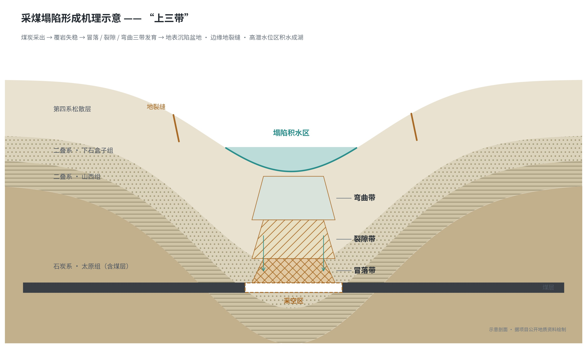
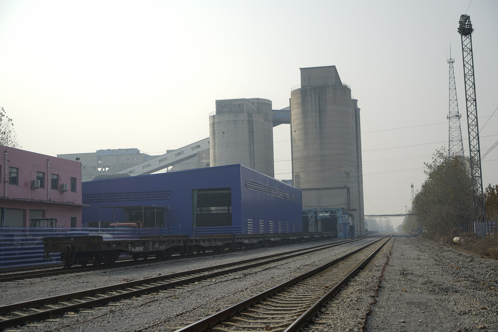
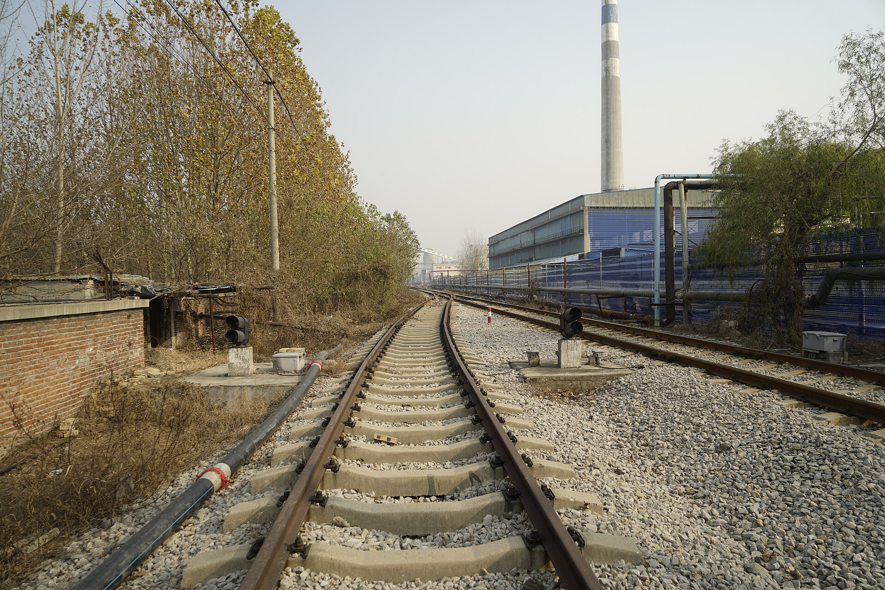
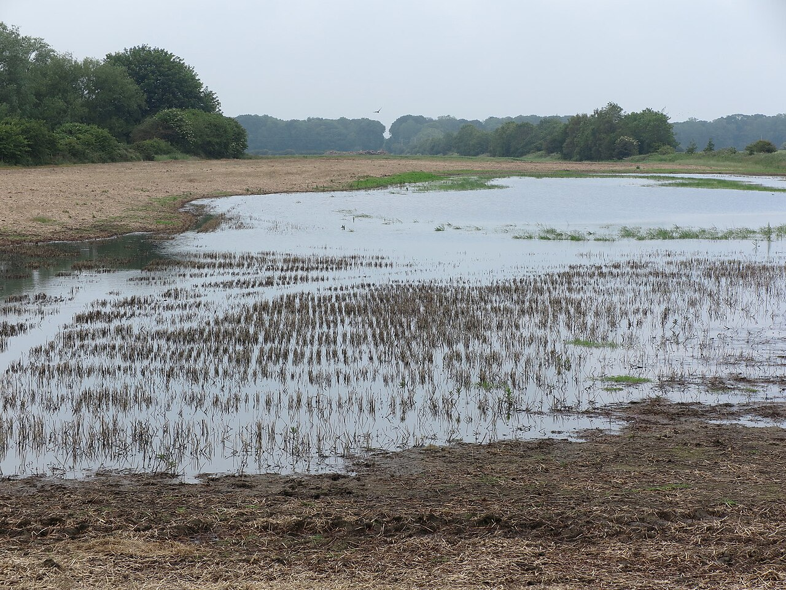
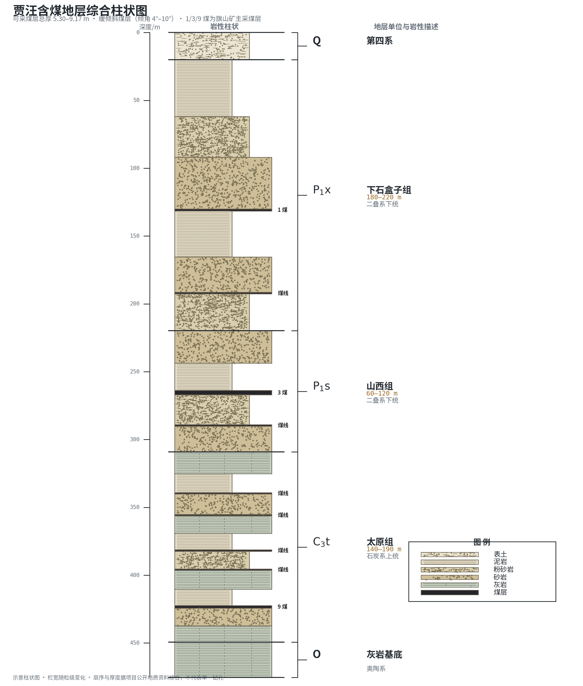
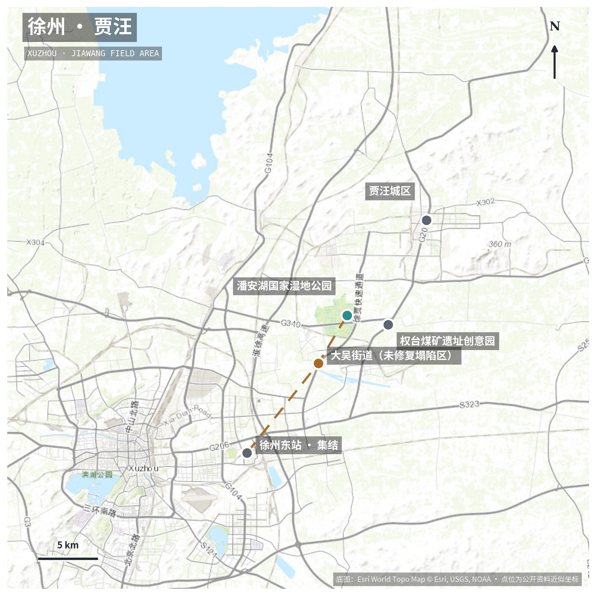

我们把地质变化理解为嵌入居民生命经验的集体记忆载体——「地质记忆」。 2026 年盛夏，十二名地院学子将赴徐州贾汪开展七天现场调研：在大吴街道调查尚未修复的沉陷盆地与地裂缝， 在老矿工的讲述中打捞矿业社区的集体记忆；在潘安湖的池杉林与湖岛间， 核对一项国家级生态修复工程的每一组数据。野外地质调查、入户访谈、问卷调查、 口述史采集与双片影像记录五线并行，以大学生的视角， 完整呈现一片土地「创伤—修复—重生」的链条。
徐州素有「江苏煤都」之称：1985 年境内产煤近 2000 万吨，约占全省 95%。贾汪鼎盛期大小矿井两百余对，煤炭一度贡献全区八成以上财政收入。百年开采的另一面，是 13.23 万亩塌陷地，和「天灰、地陷、墙裂、水黑」的生态伤疤。




潘安湖本没有湖。这里原是权台、旗山煤矿的采煤塌陷区——1.74 万亩土地沉陷，3600 余亩常年积水，6 个村庄约 3000 户村民一度离乡。2010 年起，贾汪以「挖深填浅、分层剥离、交错回填」的土壤重构技术系统治理，把大地的伤口，种成了全国首个煤矿塌陷区生态修复的湿地公园。

户外作业避开苏北八月的正午高温，早晚两个窗口推进；全程集中居住、统一管理、每日安全报备。具体行程出于团队安全考虑不予公开。把课堂搬进塌陷区，把论文写在大地上。

全体来自地球科学与资源学院，已完成《地球科学概论》课程与野外实习训练；岗位实行「能力要求—每日交付物—考核要点」三要素管理。
实践不是终点：报告、双片、数据与新闻稿将在返校后 60 日内陆续完成交付，并用于结项验收与学术展示。